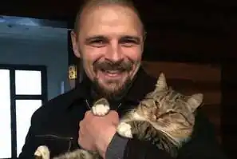
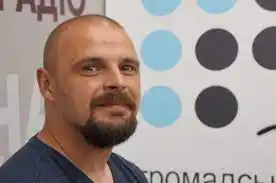

Олексій Миколайович Бик — український громадсько-політичний та культурний діяч, ветеран російсько-української війни, бард, поет. Автор пісні "Добровольці Божої чоти", що стала неофіційним гімном українського добровольчого руху завдяки однойменному документальному фільму Леоніда Кантера та Івана Яснія про захисників Донецького аеропорту.
Народився 4 грудня 1980 року, смт Сосниця, Чернігівської обл. Писати вірші розпочав ще у старших класах школи. Школу закінчив з золотою медаллю, до її закінчення вже був переможцем ряду філологічних та поетичних олімпіад та конкурсів. Після закінчення школи переїхав до Києва та вступив на філологічний факультет Педагогічного університету ім.Драгоманова.
До революційних подій 2013/2014 років працював журналістом "Главкому" . Навесні 2014 року проводив репортажі з уже окупованого Криму. На революційному майдані долучається до Правого Сектору, згодом певний час був партійним речником. В липні 2014 року добровольцем пішов на фронт, де перебував до зими 2014/2015 років. Воював у складі Доброво́льчого Українського Корпусу "Правий сектор", виконував обов'язки стрільця, стрільця-водія, командира медичної групи. Деякий час перебував у Донецькому аеропорту, але "кіборгом" себе не вважає . З зими 2014/2015 років брав участь у формуванні 13-го батальйону ДУК ПС, який готувався на випадок оборони столиці. Один з ініціаторів проекту "Пісні війни". У 2017 році став лауреатом "премії ім.Я.Гальчевського". У грудні 2017 року став фігурантом скандалу у зв'язку з побиттям проросійського журналіста Руслана Коцаби, який закликав ухилятися від мобілізації. Член політичної партії Національний Корпус, восени 2020 року був кандидатом у депутати Вишневої міської ради від Національного Корпусу. У 2020 році був співзасновником та членом журі літературного конкурсу ім.А.Лупиноса. З лютого 2022 року військовослужбовець ЗСУ командир інженерно-саперної роти, штурмової бригади. В 2023 році був учасником боїв за Бахмут.